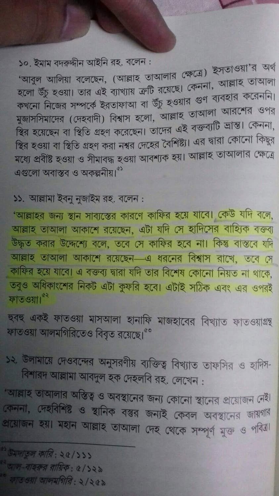

সেকালে আশআরি-মাতুরিদি আকিদাহর লোকজন দলিল-প্রমাণ ও যুক্তিতর্কে শাইখুল ইসলাম ইবনু…
২৭ মার্চ, ২০২৪
সেকালে আশআরি-মাতুরিদি আকিদাহর লোকজন দলিল-প্রমাণ ও যুক্তিতর্কে শাইখুল ইসলাম ইবনু তাইমিয়্যাহ রাহ-এর সঙ্গে কুলিয়ে উঠতে না পেরে রাষ্ট্রীয় ক্ষমতার দ্বারস্থ হয় এবং বি/দ্বেষবশত তাঁকে কারারুদ্ধ করে রাখে। অতঃপর দিমাশকের অলিগলিতে এই মর্মে ঘোষণা দেয় যে,
‘যে ব্যক্তি ইবনু তাইমিয়্যার আকিদাহ পোষণ করবে, তাকে হ›ত্য| করা এবং তার মাল আত্মসাৎ করা বৈধ।’
[বিস্তারিত: ইবনু হাজার কৃত আদ্দুরারুল কামিনাহ-১/১৭১]
তাদের উত্তরসূরীরা আজও ইনিয়েবিনিয়ে আমাদের তা/কফির করে। আর দিনশেষে গুজব ছড়ায় যে, ইবনু তাইমিয়্যা ও তাঁর অনুসারীরা হচ্ছে ত|ক/ফিরি, এরা হচ্ছে খ|রে/জি....।
কী হাস্যকর ব্যাপারস্যাপার!
আরও হাস্যকর ফতোয়া হল: কোরআন-হাদিসের প্রকৃত ও বাহ্যিক অর্থের ওপর ঈমান আনলে আপনি কা/ফের(?)
সেকালে আশআরি-মাতুরিদি আকিদাহর লোকজন দলিল-প্রমাণ ও যুক্তিতর্কে শাইখুল ইসলাম ইবনু তাইমিয়্যাহ রাহ-এর সঙ্গে কুলিয়ে উঠতে না পেরে রাষ্ট্রীয় ক্ষমতার দ্বারস্থ হয় এবং বি/দ্বেষবশত তাঁকে কারারুদ্ধ করে রাখে। অতঃপর দিমাশকের অলিগলিতে এই মর্মে ঘোষণা দেয় যে,
‘যে ব্যক্তি ইবনু তাইমিয়্যার আকিদাহ পোষণ করবে, তাকে হ›ত্য| করা এবং তার মাল আত্মসাৎ করা বৈধ।’
[বিস্তারিত: ইবনু হাজার কৃত আদ্দুরারুল কামিনাহ-১/১৭১]
তাদের উত্তরসূরীরা আজও ইনিয়েবিনিয়ে আমাদের তা/কফির করে। আর দিনশেষে গুজব ছড়ায় যে, ইবনু তাইমিয়্যা ও তাঁর অনুসারীরা হচ্ছে ত|ক/ফিরি, এরা হচ্ছে খ|রে/জি....।
কী হাস্যকর ব্যাপারস্যাপার!
আরও হাস্যকর ফতোয়া হল: কোরআন-হাদিসের প্রকৃত ও বাহ্যিক অর্থের ওপর ঈমান আনলে আপনি কা/ফের(?)
